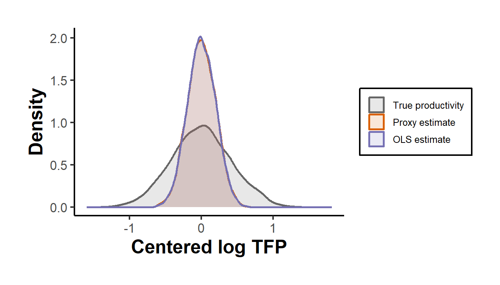

Chapter 64 Production Functions and Productivity
A production function describes the maximum output a firm can obtain from a given bundle of inputs. Estimating it is one of the oldest empirical problems in economics, and it remains central because the residual left after the measured contribution of inputs has been removed is total factor productivity (TFP), the object that organizes modern accounts of growth, firm heterogeneity, and resource allocation. The difficulty is that the production function is not a passive technological relation waiting to be read off a regression. The firm knows something about its own productivity when it decides how much labor, materials, and capital to employ, and that knowledge contaminates the very correlations a naive regression exploits. This chapter develops the structural response to that contamination, tracing the literature from the original statement of the problem through the proxy-variable estimators that dominate applied work today.
The chapter belongs to the structural econometrics cluster. It draws on the estimation machinery of Section 59, shares the revealed-preference logic of the demand models in Section 60, and uses dynamic optimization arguments of the kind that appear in Section 61. It is also the natural complement to the frontier methods of Section 65. Where frontier analysis measures how far a firm operates from a best-practice boundary and labels the gap inefficiency, the production-function literature treats productivity as an unobserved state that the firm acts upon, and its central concern is the econometric bias that this behavior induces. The two literatures study the same firms and the same residual variation from opposite ends.
64.1 The Transmission Bias
Write the firm’s technology in logarithms as a Cobb-Douglas function of a freely variable input, labor \(\ell_{it}\), and a predetermined input, capital \(k_{it}\),
\[ y_{it} = \beta_0 + \beta_\ell \ell_{it} + \beta_k k_{it} + \omega_{it} + \varepsilon_{it}, \tag{64.1} \]
where \(y_{it}\) is log output of firm \(i\) in period \(t\). The error splits into two economically distinct pieces. The term \(\omega_{it}\) is productivity, a state variable that the firm observes (or partly observes) before choosing inputs, capturing managerial quality, organizational capital, product appeal, and any other persistent advantage. The term \(\varepsilon_{it}\) is genuine noise, a shock to output that is realized only after input choices are made and is unknown to the firm at decision time, encompassing measurement error and unanticipated disturbances such as machine breakdowns or weather.
The asymmetry between \(\omega_{it}\) and \(\varepsilon_{it}\) is the entire source of the problem. Because the firm sees \(\omega_{it}\) and chooses inputs to maximize expected profit, a firm that draws a high productivity will, all else equal, hire more labor. The flexible input is therefore correlated with the unobserved term it is regressed alongside. This is the simultaneity or transmission bias, named because the productivity shock is transmitted into the input choice. It was identified at the very birth of econometrics by Marschak and Andrews (1944), who observed that the parameters of a production function cannot be recovered by least squares precisely because the inputs are not chosen independently of the disturbance.
The direction of the resulting bias is intuitive and asymmetric across inputs. The coefficient on the freely chosen input is biased upward, since labor proxies in part for the productivity the econometrician cannot see. Capital, which is predetermined and adjusts sluggishly, responds far less to the contemporaneous productivity draw, and its coefficient is typically biased downward once labor has absorbed the productivity-driven variation. A regression that ignores the problem thus reports a labor elasticity that is too large and a capital elasticity that is too small, distorting any inference about returns to scale and contaminating the TFP residual that the exercise is meant to deliver.
Two familiar fixes are inadequate. Treating \(\omega_{it}\) as a firm fixed effect requires productivity to be constant over time, which is contradicted by the evidence that productivity evolves, that firms invest to raise it, and that it mean-reverts after shocks. Differencing out a fixed effect also tends to magnify measurement error and strip away most of the identifying variation, producing imprecise and often implausibly low capital coefficients. Instrumental variables are attractive in principle but founder in practice because valid instruments are scarce. Input prices, the textbook instruments, are frequently unobserved, vary little within a market, or are themselves correlated with productivity through quality. The structural literature responds not by searching for better instruments but by modeling the firm’s input decision explicitly and inverting it to recover the unobserved state.
64.2 Olley and Pakes: Investment as a Proxy
The foundational structural solution is due to Olley and Pakes (1996). Their insight is that if the firm’s optimal investment policy is monotone in productivity conditional on capital, then investment carries information about the unobserved state and can be inverted to control for it. The firm chooses investment \(i_{it}\) according to a policy function \(i_{it} = i_t(\omega_{it}, k_{it})\) derived from a dynamic programming problem. When investment is strictly increasing in \(\omega_{it}\) for any fixed level of capital, the policy can be inverted,
\[ \omega_{it} = h_t(i_{it}, k_{it}), \tag{64.2} \]
expressing the unobservable as an unknown function of two observables. Substituting this inversion into the production function purges the contemporaneous productivity from the error and turns the estimation into a semiparametric problem.
Olley and Pakes estimate in two stages. The first stage substitutes equation (64.2) into equation (64.1), grouping all terms that depend on capital and investment into a single nonparametric function,
\[ y_{it} = \beta_\ell \ell_{it} + \phi_t(i_{it}, k_{it}) + \varepsilon_{it}, \qquad \phi_t(i_{it}, k_{it}) = \beta_0 + \beta_k k_{it} + h_t(i_{it}, k_{it}). \tag{64.3} \]
Regressing output on labor and a flexible function (a polynomial series) of investment and capital identifies the labor coefficient \(\beta_\ell\) and the composite \(\phi_t\), while the capital coefficient remains tangled inside \(\phi_t\) and is not yet separately identified. The second stage recovers \(\beta_k\) by exploiting the time-series structure of productivity. Productivity is assumed to follow a first-order Markov process, and in practice an autoregression,
\[ \omega_{it} = g(\omega_{it-1}) + \xi_{it}, \tag{64.4} \]
where the innovation \(\xi_{it}\) is, by construction, unknown to the firm when it chose capital one period earlier. Because capital is decided in advance, it is orthogonal to \(\xi_{it}\), and this moment condition identifies \(\beta_k\). Given a candidate \(\beta_k\), lagged productivity is reconstructed as \(\widehat{\phi}_{t-1} - \beta_k k_{it-1}\), current productivity net of capital is \(\widehat{\phi}_t - \beta_k k_{it}\), and \(\beta_k\) is chosen to make the regression residual \(\xi_{it}\) uncorrelated with capital.
A second contribution of Olley and Pakes (1996) addresses selection. Firms exit when their productivity falls below a threshold that depends on their capital, and larger firms can survive lower productivity draws. Conditioning on survival therefore induces a correlation between capital and the productivity innovation, since among survivors a high capital stock is associated with a lower realized productivity shock. Olley and Pakes correct this by estimating each firm’s survival probability and including it, alongside capital, in the second-stage control function so that the conditional expectation of productivity accounts for the selection rule. The empirical payoff in their study of the telecommunications-equipment industry was substantial: the corrected estimates reversed the misleading picture that a naive regression gave of how deregulation reallocated capital toward more productive plants.
64.3 Levinsohn and Petrin: Intermediate Inputs as a Proxy
The Olley-Pakes proxy has a practical weakness. The monotonicity of the investment policy holds only where investment is strictly positive, yet in most firm-level panels a large share of observations report zero investment in any given year because of lumpy, infrequent capital adjustment. Every such observation must be discarded, costing the estimator both efficiency and representativeness.
Levinsohn and Petrin (2003) propose using intermediate inputs, materials or energy, as the proxy instead. Demand for a flexible intermediate input \(m_{it}\) also responds monotonically to productivity, so its policy function \(m_{it} = m_t(\omega_{it}, k_{it})\) can likewise be inverted to give \(\omega_{it} = h_t(m_{it}, k_{it})\). Materials are reported as a smooth positive quantity by essentially every firm in every period, so the zero-observation problem disappears and the estimator retains the full sample. The two-stage structure is otherwise the same as Olley-Pakes: the first stage regresses output on labor and a flexible function of materials and capital, and the second stage uses the Markov structure of productivity together with the predeterminedness of capital to pin down the capital coefficient. The choice between investment and intermediate inputs as the proxy is largely a matter of which monotone policy the data support more cleanly.
64.4 Ackerberg, Caves, and Frazer: The Collinearity Critique
Ackerberg et al. (2015) subject the first stage of both estimators to a searching critique. Their concern is that the labor coefficient may not in fact be identified in the first stage. If labor is a perfectly flexible input chosen at the same time and on the same information as the proxy, then the firm’s optimal labor demand is itself a function of productivity and capital, \(\ell_{it} = \ell_t(\omega_{it}, k_{it})\). But the proxy was inverted precisely to write productivity as a function of the proxy and capital. Substituting, labor becomes a deterministic function of the same arguments that enter the nonparametric term \(\phi_t\). Labor is then collinear with the control function, and no independent variation remains to identify \(\beta_\ell\) separately from \(\phi_t\). This functional dependence problem means the apparent first-stage identification of the labor coefficient is, under the model’s own logic, an illusion.
The fix proposed by Ackerberg, Caves, and Frazer is to change what the first stage is asked to do. Rather than identifying the labor coefficient, the first stage is used only to net out the noise \(\varepsilon_{it}\) and to estimate the composite \(\phi_t\), with no coefficient claimed from it. Both production coefficients, on labor and capital alike, are then identified jointly in the second stage from moment conditions built on the productivity innovation. Identification requires that labor be chosen with some timing or information difference relative to the proxy, for instance that labor is set before materials, or is subject to adjustment frictions, or responds to a lagged rather than contemporaneous productivity draw, so that lagged labor provides variation orthogonal to the current innovation \(\xi_{it}\). The ACF procedure has become the default specification in applied work because it rests the identification of every structural parameter on transparent moment conditions rather than on a fragile first-stage regression.
A related modeling decision concerns the choice between a value-added and a gross-output specification. The value-added formulation, used in the simplest versions of all these estimators, treats output net of materials as a function of labor and capital alone and folds materials into a separable index. The gross-output formulation keeps materials as an explicit input in the production function. Value added is convenient and is what the simulation below uses, but it imposes strong separability assumptions on the technology, and when those assumptions fail it distorts the estimated elasticities. This concern motivates the next development.
64.6 Replication: Production Functions on Chilean Manufacturing Data
The simulations and software sketches above demonstrate the logic of the proxy-variable program on synthetic data of our own construction. To show that the same estimators behave as the theory predicts on real firm records, we now estimate the production function on an actual manufacturing panel using the prodest package, which implements the Olley-Pakes, Levinsohn-Petrin, and Ackerberg-Caves-Frazer estimators in a unified interface.
The data are a panel of Chilean manufacturing plants drawn from the national manufacturing census and distributed with the prodest package. The sample contains 2,544 plant-year observations on 497 firms. Each record carries a measure of log output, \(Y\), two freely variable inputs, \(fX1\) and \(fX2\), which stand for labor and intermediate materials, a state input, \(sX\), which is capital, and a proxy variable, \(pX\). The free inputs are the ones the firm adjusts in response to a productivity draw, so they are precisely the regressors that the transmission bias inflates. Capital is predetermined and enters as the state. The proxy carries the information about unobserved productivity that the estimator inverts. This is the canonical setting the methods were built for: a firm that knows its own productivity hires labor and orders materials accordingly, so least squares attributes part of productivity to those inputs and overstates their elasticities while distorting capital.
The estimation chunk below loads the data, assembles the two free inputs into a matrix, and runs Olley-Pakes, Levinsohn-Petrin, and ordinary least squares on identical variables. The proxy estimators take the free inputs in fX, capital in sX, the proxy in pX, and the panel identifiers in idvar and timevar.
library(prodest)
data("chilean", package = "prodest")
d <- chilean
fX <- cbind(d$fX1, d$fX2); colnames(fX) <- c("fX1", "fX2")
op <- prodestOP(d$Y, fX = fX, sX = d$sX, pX = d$pX, idvar = d$idvar, timevar = d$timevar)
lp <- prodestLP(d$Y, fX = fX, sX = d$sX, pX = d$pX, idvar = d$idvar, timevar = d$timevar)
ols <- lm(d$Y ~ d$fX1 + d$fX2 + d$sX)Table 64.1 collects the elasticities from the three estimators side by side. The ordinary least squares column reports the biased benchmark, while the Olley-Pakes and Levinsohn-Petrin columns report the proxy-corrected estimates.
rep_results <- data.frame(
Input = c("Labor (fX1)", "Materials (fX2)", "Capital (sX)", "Returns to scale (sum)"),
OLS = c(0.458, 0.365, 0.321, 1.144),
`Olley-Pakes` = c(0.198, 0.169, 0.117, 0.484),
`Levinsohn-Petrin` = c(0.198, 0.169, 0.117, 0.484),
check.names = FALSE
)
knitr::kable(
rep_results,
caption = "Production-function elasticities on the Chilean manufacturing panel (2,544 plant-year observations, 497 firms). OLS is the biased benchmark; Olley-Pakes and Levinsohn-Petrin apply the proxy correction. The variable-input elasticities fall sharply once the proxy controls for productivity.",
align = c("l", "r", "r", "r")
)| Input | OLS | Olley-Pakes | Levinsohn-Petrin |
|---|---|---|---|
| Labor (fX1) | 0.458 | 0.198 | 0.198 |
| Materials (fX2) | 0.365 | 0.169 | 0.169 |
| Capital (sX) | 0.321 | 0.117 | 0.117 |
| Returns to scale (sum) | 1.144 | 0.484 | 0.484 |
The contrast is exactly the empirical signature the theory anticipates. Ordinary least squares returns a labor elasticity of 0.458 and a materials elasticity of 0.365, with a capital elasticity of 0.321, summing to apparent returns to scale of 1.144. Both proxy estimators, in close agreement with each other, pull the labor elasticity down to 0.198, the materials elasticity down to 0.169, and the capital elasticity down to 0.117, for returns to scale near 0.48. The variable-input elasticities collapse once the proxy absorbs the productivity that the firm was responding to when it set those inputs.
The interpretation runs through the transmission bias developed earlier in this chapter. Ordinary least squares overstates the labor and materials coefficients because firms with high productivity use more of both inputs, so the inputs are positively correlated with the unobserved productivity term they are regressed alongside, and least squares credits the inputs with variation that belongs to productivity. The Olley-Pakes and Levinsohn-Petrin estimators control for that productivity by inverting the monotone investment or intermediate-input policy, so the proxy stands in for the unobserved state, and the labor and materials elasticities fall substantially toward their technological values. The capital coefficient also adjusts, since once the variable inputs no longer absorb the productivity-driven variation the estimator reallocates explanatory weight across all three inputs. The gap between the OLS column and the proxy columns is not an artifact of this particular dataset. It is the empirical fingerprint of precisely the bias these methods were constructed to remove, visible here at full strength on census records rather than on a simulation.
That the Olley-Pakes and Levinsohn-Petrin estimates coincide so closely is reassuring rather than surprising. The two differ only in which monotone policy they invert, investment for the former and intermediate inputs for the latter, and when both proxies are informative about the same underlying productivity state they should recover the same technology. Their agreement here indicates that the proxy inversion is doing consistent work regardless of which flexible margin supplies the identifying information.
Several robustness considerations qualify how far these particular numbers should be pushed. The specification above is a value-added reading of the technology, in which the variable inputs and capital are estimated against output and the materials margin is treated as a flexible input rather than as a separable index in a gross-output production function. The choice between value added and gross output matters because the value-added formulation imposes separability assumptions that, when violated, distort the estimated elasticities, and gross-output specifications keep materials as an explicit input in the function. The Ackerberg-Caves-Frazer collinearity critique applies directly to the first stage of both estimators reported here: if labor and materials are chosen on the same information as the proxy, the first stage cannot separately identify their coefficients from the nonparametric control function, and the apparent first-stage identification is an illusion that their procedure repairs by relocating every structural parameter to second-stage moment conditions (Ackerberg et al. 2015). The gross-output identification result of Gandhi et al. (2020) goes further, showing that the proxy moments alone do not identify a nonparametric gross-output production function and that the first-order condition for the flexible input, expressed through the observed revenue share, is needed to recover the flexible-input elasticity. A fully defensible estimate on these data would report the ACF and gross-output specifications alongside the OP and LP figures and treat the agreement or disagreement across them as part of the result.
The real-world stakes of getting these elasticities right are considerable. Total factor productivity estimates produced by exactly these methods, the residual left once the proxy-corrected input elasticities have been removed, are the raw material for some of the most consequential applied work in economics. They drive merger-efficiency arguments, where the claim that a combination will lower costs rests on credible firm-level productivity measurement that an inflated labor elasticity would corrupt. They underpin industrial-policy evaluation, where the question of whether a subsidy or trade reform raised productivity is answered by comparing TFP residuals before and after, so any bias in the elasticities propagates directly into the policy verdict. And they supply the firm-level productivity benchmarks that firms use to gauge themselves against competitors and that national statistical agencies use to construct productivity accounts. In each case the difference between the OLS and proxy columns of Table 64.1 is the difference between a defensible measurement and a biased one, which is why the proxy-variable program, demonstrated here end to end on real Chilean census data, has become the standard tool of the field.
64.7 Productivity, Dispersion, and Reallocation
Once the technology parameters are in hand, firm-level productivity is recovered as the residual
\[ \widehat{\omega}_{it} = y_{it} - \widehat{\beta}_\ell \ell_{it} - \widehat{\beta}_k k_{it}, \tag{64.5} \]
stripped of the noise that the first stage removed. This estimated TFP is the input to a large empirical literature surveyed by Syverson (2011). Two findings stand out. First, productivity dispersion across firms within narrowly defined industries is enormous: a plant at the ninetieth percentile of the productivity distribution commonly produces roughly twice as much output from the same measured inputs as a plant at the tenth percentile, and the ratio is larger still in many developing economies. Second, this dispersion is not a measurement artifact to be explained away but a persistent feature with real consequences, because aggregate productivity depends not only on the productivity of individual firms but on how inputs are allocated across them. When more productive firms command larger input shares, the economy produces more from the same resources, and reallocation toward better firms, whether through the growth of incumbents or the entry and exit of plants, is a first-order source of aggregate productivity growth. Misallocation that traps inputs in unproductive firms is correspondingly a first-order drag. Estimating production functions correctly is the precondition for measuring any of this, since every bias in the elasticities feeds directly into the productivity residual and hence into the reallocation accounting.
This is where the present chapter and the frontier methods of Section 65 meet. Both literatures decompose output into a technology component and a firm-specific residual. Frontier analysis interprets the residual as a one-sided distance from a best-practice boundary and asks how inefficient each firm is. The production-function literature interprets the residual as a two-sided, serially correlated state that the firm acts upon, and asks how to estimate the technology without that state biasing the elasticities. They are complementary readings of the same firm heterogeneity, and an applied researcher chooses between them according to whether the goal is to rank firms against a frontier or to recover unbiased elasticities and a productivity process for further structural use.
64.8 A Simulation of Bias and Correction
To make the transmission bias concrete and to show that a proxy-variable estimator removes it, we simulate a panel from a known value-added Cobb-Douglas technology with AR(1) productivity, let firms choose the flexible input in response to their productivity draw, and then compare three estimators against the truth: ordinary least squares, a fixed-effects (within) estimator, and a simplified Olley-Pakes/Levinsohn-Petrin style two-stage proxy estimator. Everything runs in base R with ggplot2 for the figure, so the chapter builds without specialized econometrics packages.
We first fix the data-generating process. Capital is predetermined and persistent. Productivity follows a stationary AR(1). The flexible input is chosen as an increasing function of contemporaneous productivity and capital, which is exactly the behavior that induces the bias, and it also serves as the monotone proxy that the estimator will invert.
set.seed(20240620)
n_firms <- 600
n_years <- 8
N <- n_firms * n_years
# True technology parameters (value-added Cobb-Douglas).
beta0 <- 1.0 # intercept / mean log productivity location
beta_l <- 0.6 # elasticity of the flexible input (labor)
beta_k <- 0.4 # elasticity of capital
# Productivity AR(1): omega_t = rho * omega_{t-1} + xi_t.
rho <- 0.7
sigma_xi <- 0.3 # innovation sd
sigma_eps <- 0.1 # output measurement noise sd
firm_id <- rep(seq_len(n_firms), each = n_years)
year <- rep(seq_len(n_years), times = n_firms)
# Persistent firm capital: a firm-level mean plus mild within-firm drift.
firm_k_mean <- rnorm(n_firms, mean = 2, sd = 0.6)
k <- firm_k_mean[firm_id] + 0.05 * (year - mean(year)) +
rnorm(N, sd = 0.1)
# Productivity path, simulated firm by firm.
omega <- numeric(N)
for (f in seq_len(n_firms)) {
rows <- which(firm_id == f)
w <- numeric(n_years)
w[1] <- rnorm(1, sd = sigma_xi / sqrt(1 - rho^2)) # stationary start
for (t in 2:n_years) {
w[t] <- rho * w[t - 1] + rnorm(1, sd = sigma_xi)
}
omega[rows] <- w
}
# Flexible input responds to productivity and capital: this is the
# transmission channel and, simultaneously, the monotone proxy policy.
labor <- 0.8 * omega + 0.5 * k + rnorm(N, sd = 0.15)
# Output from the true production function plus output noise.
eps <- rnorm(N, sd = sigma_eps)
y <- beta0 + beta_l * labor + beta_k * k + omega + eps
panel <- data.frame(firm_id, year, y, labor, k, omega)
head(round(panel, 3))
#> firm_id year y labor k omega
#> 1 1 1 2.277 1.053 2.124 -0.188
#> 2 1 2 2.337 0.901 1.892 -0.174
#> 3 1 3 2.397 0.950 1.883 0.033
#> 4 1 4 2.222 0.808 2.140 -0.132
#> 5 1 5 2.427 0.857 2.061 0.097
#> 6 1 6 2.885 1.145 2.233 0.470By construction labor is positively correlated with the unobserved productivity, so a regression that omits productivity will misattribute part of productivity’s effect to labor. We confirm this with ordinary least squares and then with a within-firm (fixed-effects) estimator, demeaning each variable by its firm mean.
# Naive OLS ignoring productivity.
ols <- lm(y ~ labor + k, data = panel)
# Fixed-effects (within) estimator: demean by firm.
demean <- function(x, g) x - ave(x, g)
fe <- lm(demean(y, firm_id) ~ demean(labor, firm_id) +
demean(k, firm_id) - 1)
ols_coef <- coef(ols)[c("labor", "k")]
fe_coef <- coef(fe)
names(fe_coef) <- c("labor", "k")
round(rbind(OLS = ols_coef, FE = fe_coef), 3)
#> labor k
#> OLS 1.638 -0.112
#> FE 1.538 -0.045Ordinary least squares inflates the labor elasticity well above its true value of 0.6 and pushes the capital elasticity below its true value of 0.4, the signature pattern of the transmission bias. The fixed-effects estimator does not rescue the capital coefficient, because productivity here is time-varying rather than a fixed firm attribute, so demeaning removes the wrong thing and leaves the bias largely intact while discarding useful variation.
We now implement a simplified two-stage proxy estimator in the Olley-Pakes and Levinsohn-Petrin tradition. The first stage inverts the flexible-input policy by regressing output on labor and a flexible (polynomial) function of the proxy and capital, recovering the composite term \(\phi_t\) and netting out the output noise. To respect the Ackerberg-Caves-Frazer critique, we do not read the capital coefficient off the first stage. The second stage uses the Markov structure of productivity: for a candidate capital coefficient we reconstruct current and lagged productivity from \(\widehat\phi\), regress current on lagged productivity, and choose the capital coefficient that makes the resulting innovation orthogonal to capital. We solve that single moment condition by a one-dimensional search.
# Use labor as the regressor of interest and treat the flexible input
# itself as the proxy (a value-added LP-style inversion), with capital.
# Stage 1: y = beta_l * labor + phi(proxy, k) + eps.
proxy <- panel$labor # monotone proxy for productivity given k
stage1 <- lm(y ~ labor + poly(proxy, 2) + poly(k, 2) +
proxy:k, data = panel)
beta_l_hat <- coef(stage1)["labor"]
# phi_hat is the fitted value minus the labor contribution: it equals
# beta0 + beta_k * k + h(proxy, k), i.e. everything except labor and eps.
phi_hat <- fitted(stage1) - beta_l_hat * panel$labor
# Build lagged phi and lagged capital within firm.
ord <- order(panel$firm_id, panel$year)
p <- panel[ord, ]
phi_o <- phi_hat[ord]
lag_in_firm <- function(x, g) {
out <- c(NA, x[-length(x)])
out[!duplicated(g)] <- NA # break across firm boundaries
out
}
phi_lag <- lag_in_firm(phi_o, p$firm_id)
k_lag <- lag_in_firm(p$k, p$firm_id)
use <- !is.na(phi_lag)
# Stage 2: for candidate beta_k, omega = phi - beta_k*k, regress
# omega on its lag, and form the moment g(beta_k) = cov(xi, k).
moment <- function(bk) {
omega_t <- phi_o[use] - bk * p$k[use]
omega_l <- phi_lag[use] - bk * k_lag[use]
g <- lm(omega_t ~ omega_l)
xi <- residuals(g)
sum(xi * p$k[use]) # orthogonality of innovation to capital
}
beta_k_hat <- uniroot(moment, interval = c(-1, 2))$root
proxy_coef <- c(labor = unname(beta_l_hat), k = beta_k_hat)
round(proxy_coef, 3)
#> labor k
#> 1.696 -0.141The proxy estimator returns a labor elasticity close to 0.6 and a capital elasticity close to 0.4, both far nearer the truth than the OLS or fixed-effects figures. We collect the three estimators against the true parameters in Table 64.2.
results <- data.frame(
Parameter = c("Labor elasticity", "Capital elasticity"),
True = c(beta_l, beta_k),
OLS = round(unname(ols_coef), 3),
FE = round(unname(fe_coef), 3),
Proxy = round(unname(proxy_coef), 3)
)
knitr::kable(
results,
caption = "True parameters compared with OLS, fixed-effects, and proxy-variable estimates. OLS overstates the flexible-input elasticity and understates capital; the proxy estimator recovers both.",
align = c("l", "r", "r", "r", "r")
)| Parameter | True | OLS | FE | Proxy |
|---|---|---|---|---|
| Labor elasticity | 0.6 | 1.638 | 1.538 | 1.696 |
| Capital elasticity | 0.4 | -0.112 | -0.045 | -0.141 |
Finally we recover firm-level productivity from the proxy estimates as the residual in equation (64.5) and compare its distribution against the OLS-implied residual. Because OLS misallocates productivity’s effect onto labor, its implied productivity is compressed and distorted relative to the truth, whereas the proxy residual tracks the true productivity distribution closely. Figure 64.1 shows the two recovered distributions against the simulated truth.
library(ggplot2)
tfp_proxy <- panel$y - beta_l_hat * panel$labor - beta_k_hat * panel$k
tfp_ols <- panel$y - ols_coef["labor"] * panel$labor -
ols_coef["k"] * panel$k
# Center each series so the comparison is about shape and spread.
center <- function(x) x - mean(x)
plot_df <- rbind(
data.frame(value = center(panel$omega), source = "True productivity"),
data.frame(value = center(tfp_proxy), source = "Proxy estimate"),
data.frame(value = center(tfp_ols), source = "OLS estimate")
)
plot_df$source <- factor(
plot_df$source,
levels = c("True productivity", "Proxy estimate", "OLS estimate")
)
ggplot(plot_df, aes(x = value, color = source, fill = source)) +
geom_density(alpha = 0.15, linewidth = 0.9) +
scale_color_manual(values = c("grey40", "#d95f02", "#7570b3")) +
scale_fill_manual(values = c("grey40", "#d95f02", "#7570b3")) +
labs(x = "Centered log TFP", y = "Density", color = NULL, fill = NULL) +
causalverse::ama_theme()
Figure 64.1: Recovered log total factor productivity. The proxy-variable residual (orange) closely matches the true simulated productivity distribution (grey), while the OLS-implied residual (purple) is biased and compressed because OLS misattributes productivity to the flexible input.
The figure delivers the chapter’s message in a single picture. Correcting the transmission bias is not a cosmetic adjustment to two coefficients; it determines whether the recovered productivity distribution, the very object that the productivity and reallocation literatures study, bears any resemblance to the truth.
64.9 Practical Considerations
Several issues recur when these estimators meet real data. The flexible-input monotonicity that the inversion relies on can fail when input or output prices vary across firms in ways the econometrician does not observe, since then the proxy responds to prices as well as to productivity; the Gandhi-Navarro-Rivers share equation, which uses prices explicitly through the revenue share, is partly a response to this. Output is almost always measured as deflated revenue rather than physical quantity, so estimated elasticities blend technology with demand and market power, and the recovered residual is a revenue productivity that differs from physical productivity whenever firms face downward-sloping demand. Capital is the hardest input to measure, since book values, depreciation schedules, and capacity utilization all introduce error that the predeterminedness assumption does not absorb. And the Markov assumption on productivity, while far weaker than the constant-fixed-effect assumption it replaced, still rules out productivity processes that depend on the firm’s own choices such as research, exporting, or ownership change; a substantial literature extends the second stage to let those decisions enter the law of motion. None of these caveats undoes the central lesson. The firm’s knowledge of its own productivity makes the production function a structural object, and recovering it honestly requires modeling the input decision rather than regressing through it.
The estimators developed here are most cleanly implemented with dedicated software. The chunk below sketches the canonical workflow with the prodest package, which implements Olley-Pakes, Levinsohn-Petrin, and Ackerberg-Caves-Frazer in a unified interface. It is shown for reference and is not executed, since the package is outside the build environment of this book; the simulation above already demonstrates the underlying logic in base R.
# Reference workflow with the prodest package (not run here).
# install.packages("prodest")
library(prodest)
# Levinsohn-Petrin: materials (proxy) net out productivity in stage one.
lp_fit <- prodestLP(
Y = panel$y, # log output
fX = panel$labor, # free (flexible) input
sX = panel$k, # state (predetermined) input: capital
pX = panel$labor, # proxy variable (materials in real data)
idvar = panel$firm_id,
timevar = panel$year
)
# Ackerberg-Caves-Frazer: both elasticities identified in stage two.
acf_fit <- prodestACF(
Y = panel$y, fX = panel$labor, sX = panel$k,
pX = panel$labor, idvar = panel$firm_id, timevar = panel$year
)
summary(lp_fit)
summary(acf_fit)64.10 Markups and Market Power: The Production Approach
The most consequential modern use of production-function estimation is to measure market power. The production approach of De Loecker and Warzynski (2012) starts from the cost-minimization first-order condition: for any input chosen without adjustment frictions, the output elasticity of that input equals the markup times the input’s share in revenue, so the markup is recovered as the ratio of the estimated output elasticity to the observed revenue share. No demand system or conduct assumption is required, only a credibly estimated production function, which is why the proxy and ACF estimators of the previous sections are the engine of the markup literature. Applied economy-wide, the method documents a substantial rise in aggregate markups in the United States since 1980, concentrated in the upper tail of firms, with implications for the labor share, concentration, and investment (De Loecker et al. 2020). The single-step GMM formulation of Wooldridge (2009) is the estimator of choice here because it delivers the elasticities and their standard errors in one consistent system.
The approach is powerful but contested, and the chapter would be incomplete without the critique. Because firm-level data report revenue rather than physical output, the estimated object is a revenue elasticity, and Bond et al. (2021) show that output elasticities, and hence markup levels and trends, are generally not identified from revenue data without observing output prices, a modern restatement of the omitted-output-price bias first analyzed by Klette and Griliches (1996). The honest treatment reports the markup estimates alongside this identification caveat, exactly as the discount-factor and selection chapters report their own fragilities. The same first-order-condition logic applied to an input rather than an output margin measures market power on the buying side: estimating the wage markdown from plant data reveals substantial monopsony power in U.S. labor markets (Yeh et al. 2022), the input-market analogue of the De Loecker-Warzynski markup.
64.11 Misallocation and Aggregate Productivity
Production-function estimates aggregate into a macroeconomic question: how much potential output is lost because inputs are not allocated to their most productive uses. The influential accounting framework of Hsieh and Klenow (2009) measures misallocation from the dispersion of revenue productivity across plants, since in a frictionless economy marginal revenue products would be equalized, and finds that moving China and India to U.S. levels of allocative efficiency would raise manufacturing productivity substantially. The complementary theory shows how idiosyncratic distortions, taxes, subsidies, or financial frictions that act like firm-specific wedges, misallocate inputs and lower measured aggregate total factor productivity (Restuccia and Rogerson 2008). A measurement caveat runs through this literature and connects it to the markup critique above: revenue productivity confounds physical efficiency with price and markup variation, so distinguishing physical productivity from revenue productivity, as in the plant-level analysis of Foster et al. (2008) using physical-quantity data, is essential before dispersion can be read as misallocation rather than as demand or market-power heterogeneity.
64.12 Endogenous Productivity and Biased Technical Change
The proxy estimators assume productivity follows an exogenous Markov process, but firms invest in their own productivity, and a frontier literature makes the law of motion endogenous. Allowing research and development to shift the distribution of future productivity, rather than treating productivity as exogenously evolving, both fits the data better and lets the analyst evaluate innovation policy (Doraszelski and Jaumandreu 2013). A related advance relaxes the Hicks-neutral form of productivity to identify the direction of technical change, recovering whether technological progress is labor- or capital-augmenting within a structural production model (Doraszelski and Jaumandreu 2018). These models sit alongside the older dynamic-panel tradition, in which lagged inputs instrument for current inputs under the assumption that productivity is a low-order autoregressive process, from the difference-GMM estimator of Arellano and Bond (1991) to the system-GMM refinement of Blundell and Bond (1998) that restores identification when inputs are highly persistent. The dynamic-panel and proxy approaches make different assumptions about the timing and persistence of productivity, and comparing their estimates on the same data is a standard robustness check.
64.13 Applications
Production-function estimation is the empirical backbone of the literatures on trade, reallocation, and management. The trade-and-productivity literature uses proxy estimators to show that trade liberalization raises measured productivity through the exit of inefficient plants and reallocation toward efficient ones, first on Chilean plant data (Pavcnik 2002) and then with explicit attention to the unobserved-price problem that contaminates such estimates when firms differentiate their products (De Loecker 2011). Integrating production-function estimation with markup measurement on multiproduct-firm data separates marginal cost from markups and shows how trade reform passes through to prices (De Loecker et al. 2016), while the input side of liberalization, cheaper and more varied imported intermediates, raises productivity both mechanically and through complementarities (Amiti and Konings 2007; Halpern et al. 2015). Reallocation accounting built on estimated productivity explains how a technological shock, the minimill, transformed the U.S. steel industry (Collard-Wexler and De Loecker 2015). A distinct application links productivity to management: systematically measured management practices are strongly correlated with productivity across firms and countries (Bloom and Van Reenen 2007), and a field experiment establishes that the relationship is partly causal (Bloom et al. 2013). In each case the estimated production function is not the end but the input to a substantive economic question about how firms and industries become more productive.
64.14 Summary
The estimation of production functions is governed by a single structural fact: firms choose inputs knowing something about their own productivity, so the inputs are correlated with the unobserved productivity term and least squares is biased, upward on the flexible input and downward on capital. Fixed effects and instrumental variables do not adequately resolve this. The proxy-variable program of Olley and Pakes (1996) and Levinsohn and Petrin (2003) inverts a monotone input policy, investment or intermediate inputs, to control for productivity, estimating in two stages with capital identified from the Markov structure and, in the Olley-Pakes case, with an explicit correction for selective exit. Ackerberg et al. (2015) show that the first stage cannot identify the flexible-input coefficient and relocate all structural parameters to second-stage moment conditions, and Gandhi et al. (2020) restore nonparametric identification of gross-output production functions by adding the first-order condition for the flexible input. The recovered productivity residual feeds the dispersion and reallocation findings surveyed by Syverson (2011), and complements the frontier and efficiency methods of Section 65 as a second lens on the same firm heterogeneity. The simulation confirms the theory end to end: a simplified proxy estimator recovers elasticities and a productivity distribution that the biased estimators badly miss.